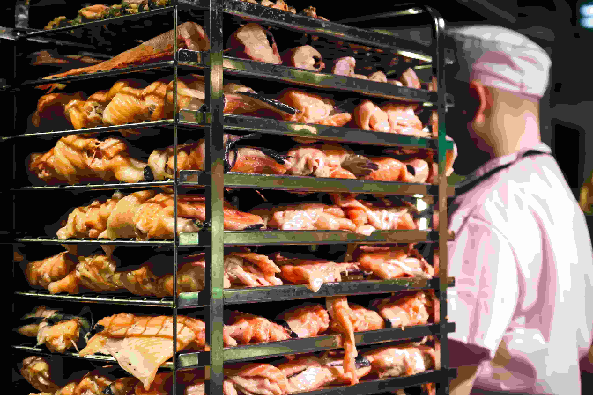

Events
Next events: Seminario de Innovación Agrícola. ¡No te lo pierdas!
Fecha: 15 de Noviembre
Actual Weather
Fray Bentos:
22°C - Soleado
Viento: 10 km/h
Three-day forrecast
- Wednesday: 24°C ☀️
- Thursday: 26°C ☀️
- Friday: 23°C 🌥️
Prominent Companies

"Meat packing services"
Servicios de monitoreo con drones.
contacto@agroinnova.uy | 098-765-432
agroinnova.uy